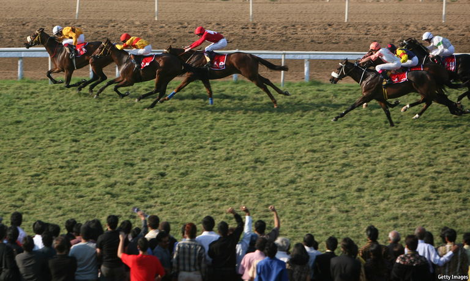
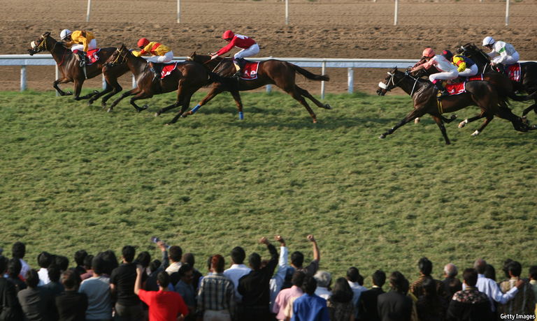

2021-03-30T13:20:55+00:00
Vaccine-making
疫苗制造
疫苗製造
Racing ahead
一马当先
一馬當先
One firm. One year. One billion shots or more. Can India’s Serum Institute do it?
一家公司，一年时间，生产10亿剂甚至更多——印度血清研究所能做到吗？
一家公司，一年時間，生產10億劑甚至更多——印度血清研究所能做到嗎？
 
ON MARCH 5TH 2020 Mumbai’s horseracing season culminated with the Poonawalla Breeders’ Multimillion, a day-long extravaganza dominated by India’s first family of the sport, the Poonawallas. Triumphs at the track were accompanied by news reports on the Bollywood lifestyles of Adar Poonawalla and his wife, Natasha, whom Elle magazine described as “India’s first lady of fabulousness”. Only cursory attention spilled over to the couple’s day job running Serum Institute of India, the press-shy vaccine-maker at the root of the family fortune.
去年3月5日，普纳瓦拉百万奖金赛马会（Poonawalla Breeders’ Multimillion）将孟买的赛马季推向高潮。在一整天的盛会上，印度赛马第一家族——普纳瓦拉家族——是绝对的主角。他们不仅仅是赛场上的王者。媒体还争相报道阿达尔·普纳瓦拉（Adar Poonawalla）和妻子娜塔莎（Natasha）宝莱坞明星式的生活方式——《Elle》杂志曾将娜塔莎誉为“印度最美女性”。这对夫妇的正职——经营印度血清研究所（Serum Institute of India）——只被媒体一笔带过。而这家向来很少见诸报端的疫苗制造商正是这个家族的财富根基。
去年3月5日，普納瓦拉百萬獎金賽馬會（Poonawalla Breeders’ Multimillion）將孟買的賽馬季推向高潮。在一整天的盛會上，印度賽馬第一家族——普納瓦拉家族——是絕對的主角。他們不僅僅是賽場上的王者。媒體還爭相報道阿達爾·普納瓦拉（Adar Poonawalla）和妻子娜塔莎（Natasha）寶萊塢明星式的生活方式——《Elle》雜誌曾將娜塔莎譽為“印度最美女性”。這對夫婦的正職——經營印度血清研究所（Serum Institute of India）——只被媒體一筆帶過。而這家向來很少見諸報端的疫苗製造商正是這個家族的財富根基。
A year on it is the company, not its flamboyant owners, that is making headlines. As the covid-19 vaccination drive encounters production glitches in Europe, hits distribution snags in America and faces a geopolitical scramble for supply everywhere, Serum Institute has emerged as the one firm apparently able to ramp up production fast and export the doses without courting controversy. By the end of the year, Mr Poonawalla says, it will add 1.5bn covid-19 shots to 1.3bn-1.5bn doses against diseases from measles to tuberculosis that it already produces annually. On February 23rd it dispatched the first mass shipment, of 70m shots of the Oxford-AstraZeneca vaccine, to India and two dozen other poor countries in the COVAX vaccine-sharing programme. On March 1st Canada said it will procure 500,000 doses from the company. The relatively small family concern, which entered last year with annual revenues of $735m and a workforce of 6,000, is becoming mission-critical to the global fight against the coronavirus.
一年过去了，如今登上各大媒体头条的是这家公司，而不是它招摇的主人。随着新冠疫苗接种行动在欧洲遭遇生产问题，在美国遭遇分配问题，并且在世界各地都面对一场地缘政治上的供应争夺战，血清研究所脱颖而出——这看起来是一家有能力快速提高产量，并在不引发争议的情况下出口疫苗的公司。普纳瓦拉表示，到今年年底，公司将在现在年产13亿至15亿剂麻疹和结核病等疾病疫苗的基础上，再生产15亿剂新冠疫苗。2月23日，它向印度和其他20多个加入了新冠疫苗实施计划（COVAX）的贫穷国家派发了第一批7000万剂牛津-阿斯利康疫苗。3月1日，加拿大表示将从该公司采购50万剂疫苗。这家规模不算大的家族企业去年初还只有7.35亿美元年收入以及6000名员工，现在正成为全球抗击新冠病毒的中坚力量。
一年過去了，如今登上各大媒體頭條的是這家公司，而不是它招搖的主人。隨着新冠疫苗接種行動在歐洲遭遇生產問題，在美國遭遇分配問題，並且在世界各地都面對一場地緣政治上的供應爭奪戰，血清研究所脫穎而出——這看起來是一家有能力快速提高產量，並在不引發爭議的情況下出口疫苗的公司。普納瓦拉表示，到今年年底，公司將在現在年產13億至15億劑麻疹和結核病等疾病疫苗的基礎上，再生產15億劑新冠疫苗。2月23日，它向印度和其他20多個加入了新冠疫苗實施計劃（COVAX）的貧窮國家派發了第一批7000萬劑牛津-阿斯利康疫苗。3月1日，加拿大表示將從該公司採購50萬劑疫苗。這家規模不算大的家族企業去年初還只有7.35億美元年收入以及6000名員工，現在正成為全球抗擊新冠病毒的中堅力量。
Mr Poonawalla’s plans are ambitious, to put it mildly. He wants to raise monthly production of the Oxford vaccine from the current 60m-70m to 100m by April. That month the company will start churning out 40m-50m of a shot developed by Novavax, an American biotechnology firm, to build up a “large stock” as it undergoes accelerated review by a number of global regulators. By late summer Serum Institute expects to be making another vaccine, by SpyBiotech, a British startup. In early 2022 it hopes to be producing a one-dose nasal vaccine being developed by Codagenix, another American biotech firm.
雄心勃勃不足以形容普纳瓦拉的计划。他希望到4月份将牛津疫苗的月产能从目前的6000万到7000万剂提高到1亿剂。4月，该公司将开始量产4000万到5000万剂由美国生物技术公司Novavax研发的疫苗，从而在全球一批监管机构加速审批其疫苗之时建立起“大量储备”。血清研究所期望能在夏末之前生产由英国创业公司SpyBiotech研制的另一种疫苗。它还希望自2022年初生产由另一家美国生物技术公司Codagenix研发的单剂鼻腔疫苗。
雄心勃勃不足以形容普納瓦拉的計劃。他希望到4月份將牛津疫苗的月產能從目前的6000萬到7000萬劑提高到1億劑。4月，該公司將開始量產4000萬到5000萬劑由美國生物技術公司Novavax研發的疫苗，從而在全球一批監管機構加速審批其疫苗之時建立起“大量儲備”。血清研究所期望能在夏末之前生產由英國創業公司SpyBiotech研製的另一種疫苗。它還希望自2022年初生產由另一家美國生物技術公司Codagenix研發的單劑鼻腔疫苗。
Mr Poonawalla estimates that until rivals’ new capacity comes online in the autumn, his company’s output will account for perhaps 40-50% of the world’s supply. Unlike Pfizer, an American drug giant which recently upped its production goal from 1.3bn to 2bn doses this year, Serum Institute’s shots are cheap and do not need to be stored at ultra-low temperatures. They will inoculate swathes of the poor world.
普纳瓦拉预计，在今年秋季竞争对手提高产能之前，自己公司的产量可能会占到全球供应量的40%至50%。美国制药巨头辉瑞最近将今年的生产目标从13亿剂提高到20亿剂。而与辉瑞不同的是，血清研究所的疫苗价格低，且不需要在超低温下储存。它们将被贫困国家的大批人群接种。
普納瓦拉預計，在今年秋季競爭對手提高產能之前，自己公司的產量可能會佔到全球供應量的40%至50%。美國製藥巨頭輝瑞最近將今年的生產目標從13億劑提高到20億劑。而與輝瑞不同的是，血清研究所的疫苗價格低，且不需要在超低溫下儲存。它們將被貧困國家的大批人群接種。
Some of the factors behind the company’s rise to prominence, like the pandemic and scientists’ rapid response to it, have been beyond its control. But Serum Institute has also placed bold bets that run counter to the traditional process of making vaccines, in which investments in capacity and distribution follow years of research, then more years of clinical trials for safety and efficacy. A brief conversation last April, between Mr Poonawalla and his father Cyrus, Serum Institute’s founder, resulted in a decision to start producing the Oxford vaccine before any clinical trials had begun.
该公司之所以能崭露头角，有些因素不由它掌控，比如这场疫情以及科学家对疫情的快速应对。但是血清研究所本身也大胆下注，没有遵循传统的疫苗制造流程。过去，在对疫苗的产能和分配做出投资之前，需等待多年的实验室研究，再等待几年的安全性和有效性临床试验。去年4月，普纳瓦拉和他父亲、血清研究所的创始人塞勒斯（Cyrus）在一次简短的交谈后，决定在还没有任何临床试验启动之前就开始生产牛津疫苗。
該公司之所以能嶄露頭角，有些因素不由它掌控，比如這場疫情以及科學家對疫情的快速應對。但是血清研究所本身也大膽下注，沒有遵循傳統的疫苗製造流程。過去，在對疫苗的產能和分配做出投資之前，需等待多年的實驗室研究，再等待幾年的安全性和有效性臨床試驗。去年4月，普納瓦拉和他父親、血清研究所的創始人塞勒斯（Cyrus）在一次簡短的交談後，決定在還沒有任何臨床試驗啟動之前就開始生產牛津疫苗。
It is the latest daring coup by the Poonawallas. In the 1960s Cyrus turned his horse-breeding business into one that used retired steeds as living vessels to create antibody serum for treatment of snake bites, tetanus and other scourges. Forty years later his son, who has been chief executive since 2011, has added 165 countries as customers (often while courting Natasha on holidays). International sales now account for 70% of the firm’s total. In December Serum Institute released the first vaccine to be fully developed in India, against a variant of pneumonia which kills 68,000 Indian children a year.
这是普纳瓦拉家族最近一次成功的冒险。上世纪60年代，塞勒斯把自己的养马业变成了另一门生意——将退役的赛马用作活容器，用于制造治疗蛇咬伤、破伤风和其他疾病的抗体血清。40年后，他儿子（自2011年开始担任公司CEO）把疫苗卖到了165个国家（常常是在假期追求娜塔莎的时候把生意谈成的）。目前，国际业务占到公司总销售额的70%。去年12月，血清研究所投放了首个完全在印度研发的疫苗，用于治疗一种每年导致6.8万名印度儿童死亡的肺炎变体。
這是普納瓦拉家族最近一次成功的冒險。上世紀60年代，塞勒斯把自己的養馬業變成了另一門生意——將退役的賽馬用作活容器，用於製造治療蛇咬傷、破傷風和其他疾病的抗體血清。40年後，他兒子（自2011年開始擔任公司CEO）把疫苗賣到了165個國家（常常是在假期追求娜塔莎的時候把生意談成的）。目前，國際業務佔到公司總銷售額的70%。去年12月，血清研究所投放了首個完全在印度研發的疫苗，用於治療一種每年導致6.8萬名印度兒童死亡的肺炎變體。
The company’s initial investment of $80m in capacity to produce the untested Oxford shot came from its billionaire owners’ own pocket—a tidy sum next to the previous year’s $46m in capital expenditure. Since then Serum Institute has received a further $800m: $270m from the Poonawallas, $300m from the Bill & Melinda Gates Foundation, the world’s biggest charity, and the rest from prepayments by governments, including those of Bangladesh and Morocco.
该公司在一开始为生产未经试验的牛津疫苗投入了8000万美元，这笔钱来自身为亿万富翁的普纳瓦拉的私人腰包——与上一年4600万美元的资本支出相比，这是相当大一笔钱。此后，血清研究所又收到了8亿美元：其中2.7亿来自普纳瓦拉家族，3亿来自全球最大的慈善机构比尔和梅琳达·盖茨基金会，其余则是孟加拉国和摩洛哥等国政府的预付款。
該公司在一開始為生產未經試驗的牛津疫苗投入了8000萬美元，這筆錢來自身為億萬富翁的普納瓦拉的私人腰包——與上一年4600萬美元的資本支出相比，這是相當大一筆錢。此後，血清研究所又收到了8億美元：其中2.7億來自普納瓦拉家族，3億來自全球最大的慈善機構比爾和梅琳達·蓋茨基金會，其餘則是孟加拉國和摩洛哥等國政府的預付款。
The privately held firm will not say how much of that money has already been deployed. But Mr Poonawalla says it has doubled production capacity. It could do this quickly, he adds, thanks to a strategy of installing “excess capacity ahead of demand”. For decades it had been adding a new building each year; one that was ready to go shortly before the fateful chat between father and son was immediately repurposed for the covid-19 effort.
这家私人控股的公司不愿透露这笔资金已经动用了多少。但普纳瓦拉表示，公司已经将产能翻了一番。它之所以能快速做到这一点，是因为采用了“产能走在需求之前”的策略 ，他补充道。几十年来，公司每年都要新建一座厂房。在父子间发生那次决定性谈话的前不久建成的那一座立即为新冠肺炎改变了用途。
這家私人控股的公司不願透露這筆資金已經動用了多少。但普納瓦拉表示，公司已經將產能翻了一番。它之所以能快速做到這一點，是因為採用了“產能走在需求之前”的策略 ，他補充道。幾十年來，公司每年都要新建一座廠房。在父子間發生那次決定性談話的前不久建成的那一座立即為新冠肺炎改變了用途。
A long-standing collaboration with Oxford and Novavax as part of an effort to create a malaria vaccine allowed Serum Institute to secure their recipes early. Deep relationships with suppliers of everything from glass vials to expensive “bioreactors” for the production of biological substances have helped smooth procurement. Serum Institute has hired 1,000 new employees, increasing its workforce by a sixth. Another 500 construction workers are putting up new buildings with higher production capacity to add to the 30 or so that the company has erected over the years.
得益于与牛津大学以及Novavax在制造一种疟疾疫苗上的长期合作，血清研究所能够提早获得它们的配方。与供应商的深厚关系帮助它顺利采购到所有需要的设备，从玻璃小瓶到昂贵的用于生产生物物质的“生物反应器”。血清研究所新雇用了1000名员工，员工总数增加了六分之一。除了历年修建的30多座厂房，500名建筑工人正在建造产能更高的新厂房。
得益於與牛津大學以及Novavax在製造一種瘧疾疫苗上的長期合作，血清研究所能夠提早獲得它們的配方。與供應商的深厚關係幫助它順利採購到所有需要的設備，從玻璃小瓶到昂貴的用於生產生物物質的“生物反應器”。血清研究所新僱用了1000名員工，員工總數增加了六分之一。除了歷年修建的30多座廠房，500名建築工人正在建造產能更高的新廠房。
At the current pace, Mr Poonawalla thinks, it will take at least two years for the global supply of covid-19 jabs to meet demand. It could take less if the world’s regulators co-ordinated more closely for the duration of the crisis, he ventures. Until then Serum Institute expects to be selling the jabs more or less at cost, which means about $3-5 a dose for the Oxford vaccine. After that, margins will eventually rise. “This situation will last for a long time and there will be future demand,” Mr Poonawalla predicts. Covid-19 looks certain to become endemic in many parts of the world, with annual vaccination drives akin to those for influenza becoming the norm. His firm’s output will peak at 600m-700m doses a year for each of the four vaccines it is currently eyeing, he says.
普纳瓦拉认为，按照目前的速度，全球新冠疫苗的供应至少需要两年时间才能满足需求。他谨慎地表示，如果全球监管机构能在新冠危机期间更紧密地协调一致，这个时间可能会缩短。在那之前，血清研究所预计会差不多以成本价出售新冠疫苗，也就是每剂牛津疫苗3至5美元。在那以后，利润率最终会上升。“眼下的状况将会持续很长一段时间，未来还会有需求。”普纳瓦拉预计。新冠肺炎看来肯定会在世界很多地方扎根，新冠疫苗也会像流感疫苗那样，需要每年接种。他表示，对于目前瞄准的四种疫苗，公司的最高年产量都将达到6亿至7亿剂。
普納瓦拉認為，按照目前的速度，全球新冠疫苗的供應至少需要兩年時間才能滿足需求。他謹慎地表示，如果全球監管機構能在新冠危機期間更緊密地協調一致，這個時間可能會縮短。在那之前，血清研究所預計會差不多以成本價出售新冠疫苗，也就是每劑牛津疫苗3至5美元。在那以後，利潤率最終會上升。“眼下的狀況將會持續很長一段時間，未來還會有需求。”普納瓦拉預計。新冠肺炎看來肯定會在世界很多地方紮根，新冠疫苗也會像流感疫苗那樣，需要每年接種。他表示，對於目前瞄準的四種疫苗，公司的最高年產量都將達到6億至7億劑。
The pandemic will leave vaccine-making more prominent than ever before, Mr Poonawalla believes—and much more crowded. This will inject competition into what most drugmakers consider a thankless volume business with considerable capital outlays. A fire earlier this year at one new building sent a shudder down the spines of the world’s covid-responders until the company assured them that the accident, which affected a production line for a tuberculosis jab, will not hurt the pandemic effort. Although the bet on the Oxford vaccine has paid off, and the one on Novavax looks likely to, Codagenix and SpyBiotech are not yet shoo-ins. And vaccine nationalism could stymie exports from India or imports of ingredients and kit.
普纳瓦拉认为，新冠疫情会让疫苗制造受到前所未有的关注，入局者也会大幅增加。这会给这个行业注入竞争——在大多数制药商看来，这个批量生意吃力不讨好，资本投入又很大。今年早些时候，公司的一座新厂房发生火灾，这让全球新冠应急人员的脊背发凉，直到公司向大家确认发生事故的是一条肺结核疫苗生产线，不会影响到新冠疫苗的生产。尽管对牛津疫苗的赌注已经赢了，对Novavax的赌注看来可能也下对了，但对Codagenix和SpyBiotech的还没有稳操胜券。疫苗民族主义者可能会阻挠印度的疫苗出口以及原料和设备的进口。
普納瓦拉認為，新冠疫情會讓疫苗製造受到前所未有的關注，入局者也會大幅增加。這會給這個行業注入競爭——在大多數製藥商看來，這個批量生意吃力不討好，資本投入又很大。今年早些時候，公司的一座新廠房發生火災，這讓全球新冠應急人員的脊背發涼，直到公司向大家確認發生事故的是一條肺結核疫苗生產線，不會影響到新冠疫苗的生產。儘管對牛津疫苗的賭注已經贏了，對Novavax的賭注看來可能也下對了，但對Codagenix和SpyBiotech的還沒有穩操勝券。疫苗民族主義者可能會阻撓印度的疫苗出口以及原料和設備的進口。
Mr Poonawalla nevertheless remains confident that his firm will maintain its leading position. In contrast to big pharma, which spends billions on marketing costly medicines, it sells its vaccines chiefly to national health authorities, which prize low prices and reliable supply above all. Those have always been Serum Institute’s strong suits. And the Indian company’s remarkable response to covid-19 has bought it more global goodwill than any advertising campaign could hope to. ■
尽管如此，普纳瓦拉很有信心他的公司会保持领先地位。有别于砸巨资营销昂贵药品的大药厂，血清研究所的疫苗主要卖给各国卫生部门，它们最看重的是低廉的价格和可靠的供应。而这些一直都是血清研究所的强项。这家印度公司对新冠肺炎的出色反应为自己在全球赢得了很高的声誉，效果胜过任何广告宣传。
儘管如此，普納瓦拉很有信心他的公司會保持領先地位。有別於砸巨資營銷昂貴藥品的大藥廠，血清研究所的疫苗主要賣給各國衛生部門，它們最看重的是低廉的價格和可靠的供應。而這些一直都是血清研究所的強項。這家印度公司對新冠肺炎的出色反應為自己在全球贏得了很高的聲譽，效果勝過任何廣告宣傳。
For an interview with Adar Poonawalla visit economist.com/serumpod
对阿达尔·普纳瓦拉的采访请访问economist.com/serumpod
對阿達爾·普納瓦拉的採訪請訪問economist.com/serumpod